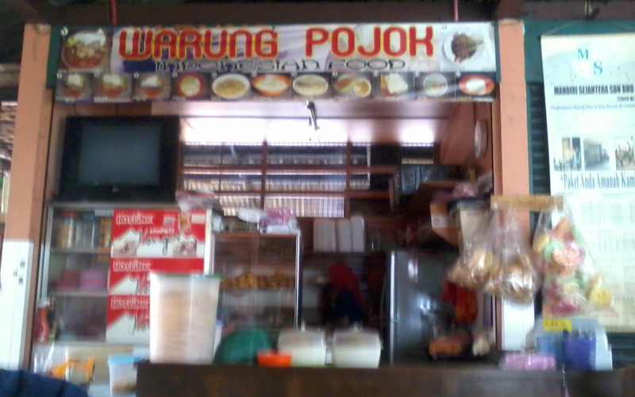

Warung Pojok
Home
Menu
Contact Us
Home
Menu
Contact Us
Wide variety of Indonesian Cuisine
Most famous for its Ayam Penyet and Gulai Kambing

History of Warung Pojok
Open from August 2016 until now
Situated in Sunway Mentari, Petaling Jaya, Malaysia
Specialize in Indonesian Food, specifically in the Surabaya region